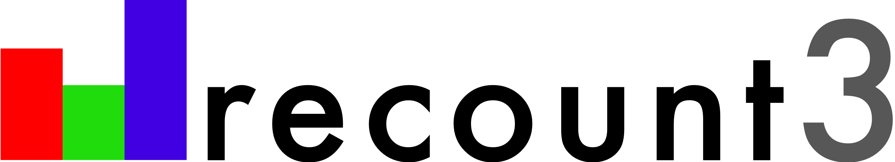

recount3 
The recount3 R/Bioconductor package is part of the recount3 project and is the latest iteration of the ReCount family of projects that provide access to uniformly-processed RNA sequencing datasets. The main documentation website for all the recount3-related projects is available at recount.bio. Please check that website for more information about how this R/Bioconductor package and other tools are related to each other.
Documentation
For more information about recount3 check the vignettes through Bioconductor or at the documentation website.
Installation instructions
Get the latest stable R release from CRAN. Then install recount3 from Bioconductor using the following code:
if (!requireNamespace("BiocManager", quietly = TRUE)) {
install.packages("BiocManager")
}
BiocManager::install("recount3")Citation
Below is the citation output from using citation('recount3') in R. Please run this yourself to check for any updates on how to cite recount3.
print(citation("recount3"), bibtex = TRUE)
#>
#> Collado-Torres L (2021). _Explore and download data from the recount3
#> project_. doi: 10.18129/B9.bioc.recount3 (URL:
#> https://doi.org/10.18129/B9.bioc.recount3),
#> https://github.com/LieberInstitute/recount3 - R package version 1.3.3,
#> <URL: http://www.bioconductor.org/packages/recount3>.
#>
#> A BibTeX entry for LaTeX users is
#>
#> @Manual{,
#> title = {Explore and download data from the recount3 project},
#> author = {Leonardo Collado-Torres},
#> year = {2021},
#> url = {http://www.bioconductor.org/packages/recount3},
#> note = {https://github.com/LieberInstitute/recount3 - R package version 1.3.3},
#> doi = {10.18129/B9.bioc.recount3},
#> }
#>
#> Wilks C, Zheng SC, Chen FY, Charles R, Solomon B, Ling JP, Imada EL,
#> Zhang D, Joseph L, Leek JT, Jaffe AE, Nellore A, Collado-Torres L,
#> Hansen KD, Langmead B (2021). "recount3: summaries and queries for
#> large-scale RNA-seq expression and splicing." _bioRxiv_. doi:
#> 10.1101/2021.05.21.445138 (URL:
#> https://doi.org/10.1101/2021.05.21.445138), <URL:
#> https://doi.org/10.1101/2021.05.21.445138>.
#>
#> A BibTeX entry for LaTeX users is
#>
#> @Article{,
#> title = {recount3: summaries and queries for large-scale RNA-seq expression and splicing},
#> author = {Christopher Wilks and Shijie C. Zheng and Feng Yong Chen and Rone Charles and Brad Solomon and Jonathan P. Ling and Eddie Luidy Imada and David Zhang and Lance Joseph and Jeffrey T. Leek and Andrew E. Jaffe and Abhinav Nellore and Leonardo Collado-Torres and Kasper D. Hansen and Ben Langmead},
#> year = {2021},
#> journal = {bioRxiv},
#> doi = {10.1101/2021.05.21.445138},
#> url = {https://doi.org/10.1101/2021.05.21.445138},
#> }Please note that recount3 was only made possible thanks to many other R and bioinformatics software authors, which are cited either in the vignettes and/or the paper(s) describing this package.
Code of Conduct
Please note that the derfinderPlot project is released with a Contributor Code of Conduct. By contributing to this project, you agree to abide by its terms.
Development tools
- Continuous code testing is possible thanks to GitHub actions through usethis, remotes, sysreqs and rcmdcheck customized to use Bioconductor’s docker containers and BiocCheck.
- Code coverage assessment is possible thanks to codecov and covr.
- The documentation website is automatically updated thanks to pkgdown.
- The code is styled automatically thanks to styler.
- The documentation is formatted thanks to devtools and roxygen2.
For more details, check the dev directory.
Project history
To clarify the relationship between the R/Bioconductor packages and the phases of ReCount please check the table below:
| Year | Phase | Main references | R/Bioconductor |
|---|---|---|---|
| 2011 | ReCount |
DOI: 10.1186/1471-2105-12-449 | none |
| 2017 | recount2 |
DOI: 10.1038/nbt.3838 10.12688/f1000research.12223.1 | recount |
| 2021 | recount3 |
DOI: 10.1101/2021.05.21.445138 | recount3 |
Teams involved
The ReCount family involves the following teams:
- Ben Langmead’s lab at JHU Computer Science
- Kasper Daniel Hansen’s lab at JHBSPH Biostatistics Department
- Leonardo Collado-Torres and Andrew E. Jaffe from LIBD
- Abhinav Nellore’s lab at OHSU
- Jeff Leek’s lab at JHBSPH Biostatistics Deparment
- Data hosted by SciServer from IDIES at JHU
 |